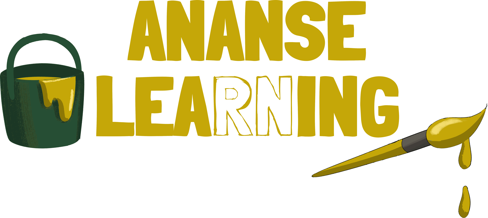

We began as Studio Mansa. As we wove together the strands of Ghanaian heritage, culture, and learning, we found ourselves drawn to an old, familiar figure, Ananse, the wise spider who has always connected stories, people, and knowledge. That’s when we knew we'd found our name.
The origins of Ananse travel back centuries and have undergone significant cultural transformations across different cultures. Ananse is a shapeshifter in that his form changes based on the culture. He is the crosser of borders and his fluidity makes him one of the most powerful legends on earth.
Ananse stories travelled across countries including the Bahamas, Barbados, Brazil, Colombia, Costa Rica, Curaçao, Grenada, Haiti, and Jamaica through the Trans-Atlantic Slave Trade. From culture to country, these stories were transformed, and Ananse’s name also changed, from Anansi, Annancy, Aunt Nancy to Bre Nancy.
As we reinterpret the art of weaving across subjects and forms to create new connections, we also hope to retell Ananse tales that have survived centuries. We have come into this new identity with boundless curiosity.
Studio Mansa, nevertheless, holds a special place in our hearts and so we couldn't let it go entirely. It now belongs to Mansa the Lioness, one of our beloved characters, as her own creative home where design and imagination roam free.